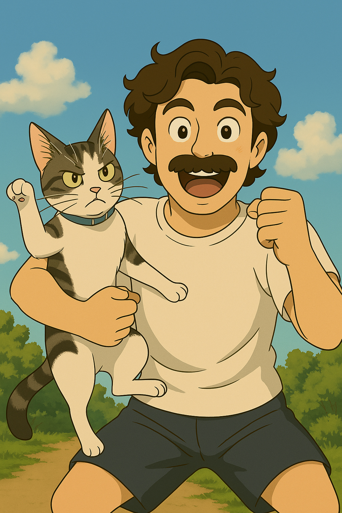
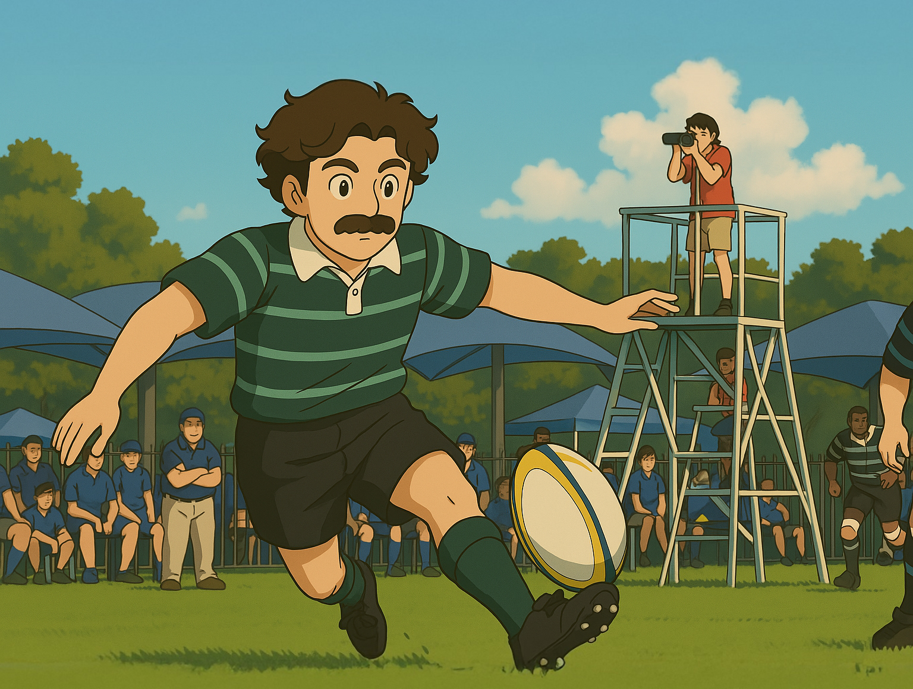
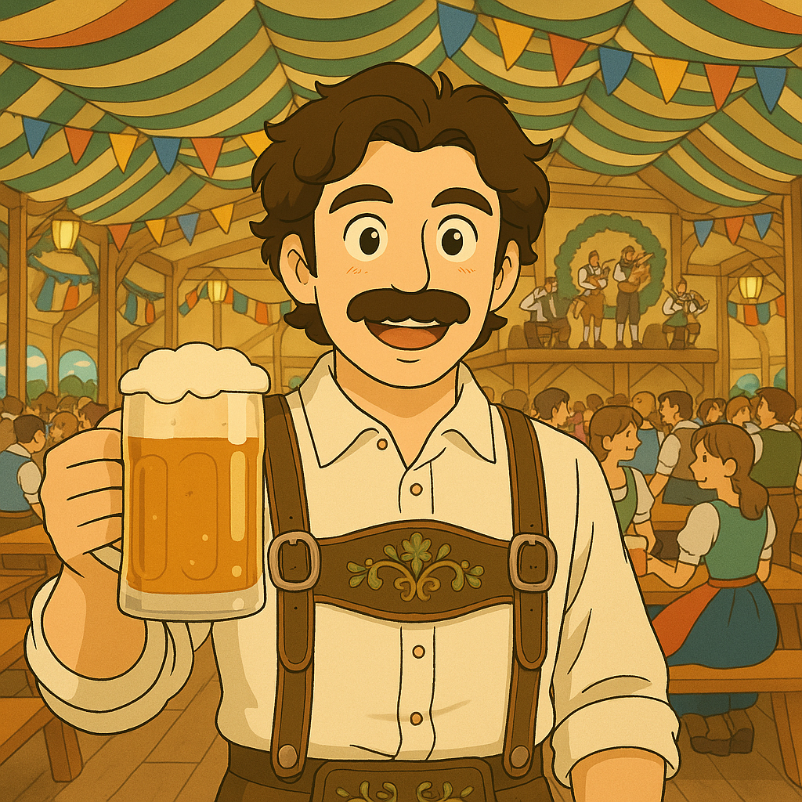

About Me
Growing up in New Zealand, rugby played a big part in shaping who I am. It taught me confidence, built lasting friendships, and offered me an early outlet for creativity. Sport, particularly rugby, also gave me a firsthand look at the impact of design. In a country where the All Blacks' visual identity is everywhere, I saw how it fostered pride and unity; an influence that still shapes how I approach design today.
Skills
Social Graphics
Web Design
Video Production
Print Design
3D Modelling
Motion Graphics
Software
Photoshop
Illustrator
InDesign
AfterEffects
Premiere Pro
VS Code
Blender


